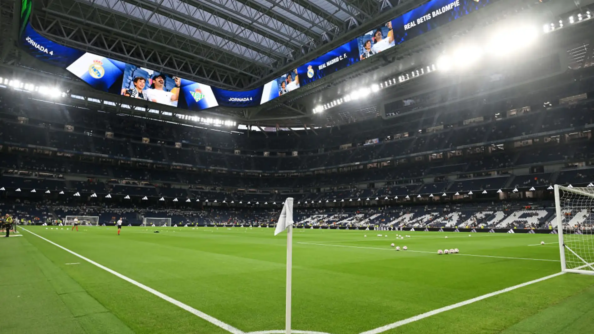

¿QUIENES SOMOS?
Somos una Peña Madridista fundada en 2023 con el nombre de nuestro querido jugador Federico Valverde. Cada vez somos más socios, lo que nos permite poder incrementar nuestras actividades y realizar viajes a ver partidos de nuestro Real Madrid tanto al Estadio Santiago Bernabeu, como a otros estadios de otros equipos de fútbol.
EXPERIENCIAS
Hemos realizado varios viajes al Estadio Santiago Bernabeu para disfrutar de algunos partidos de fútbol, al igual que el año pasado organizamos un viaje a Múnich para la disputa del partido de ida de la Semifinal de Champions League que posteriormente ganaríamos en Londres. Seguimos proponiendo viajes y actividades para llevar a cabo entre todos los socios de la peña para poder disfrutar juntos de nuestro Real Madrid.
